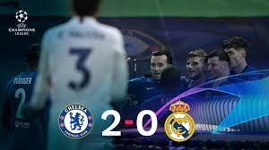

El Real Madrid pierde en semifinales de la Champions League
El Real Madrid cae ante el Chelsea 2-0 en Stanford Britch

El equipo de Zinedine Zidane cayó ante el Chelsea por dos goles a cero. Ante el pésimo juego del Real Madrid el equipo Azul marcó dos goles, uno de los señalados fue su capitán Sergio Ramos. Además el numero 7 del equipo blanco lo celebró con sus excompañeros.